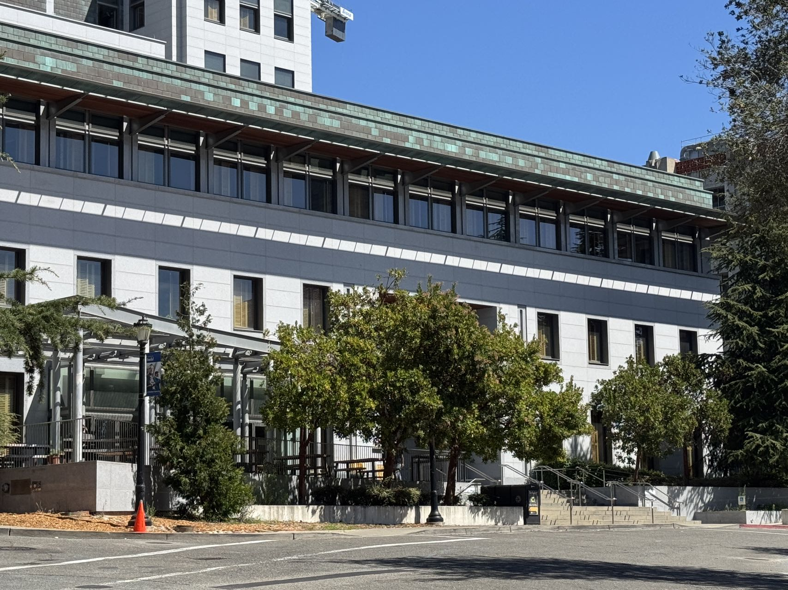
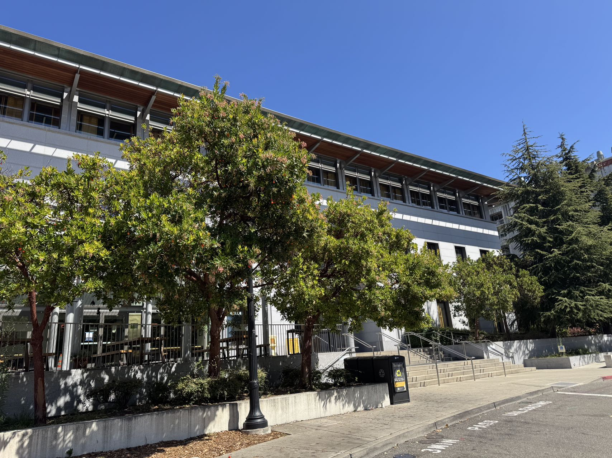
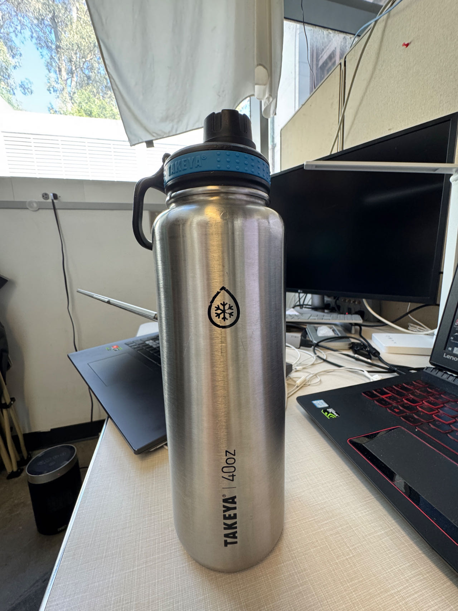
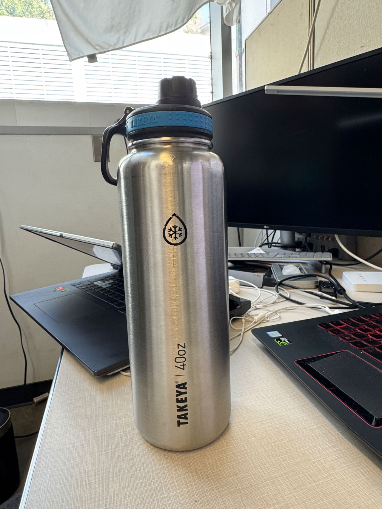
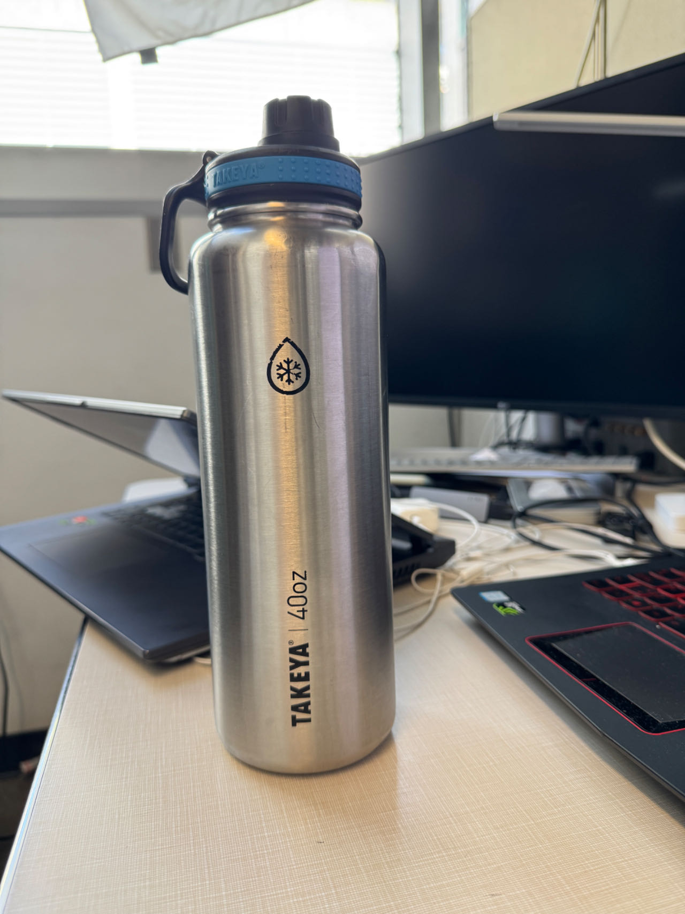
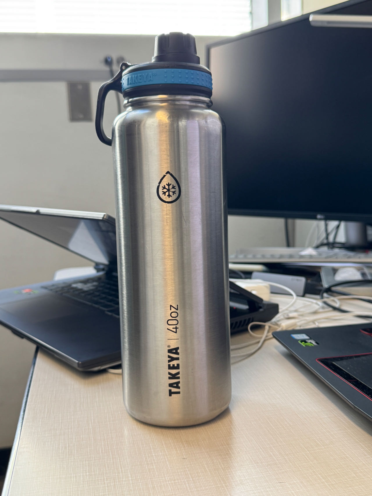
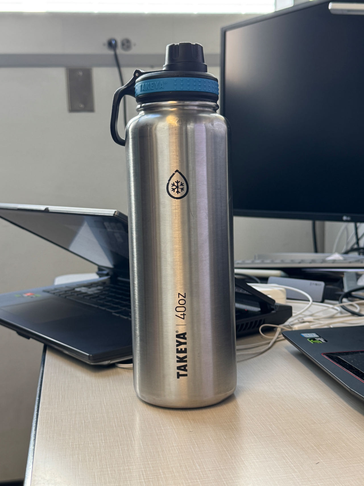
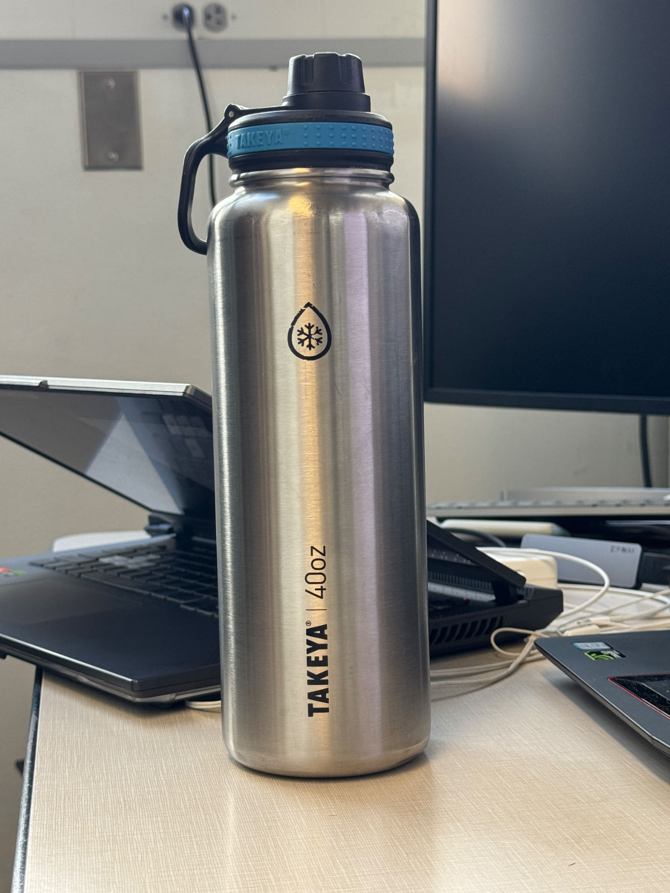
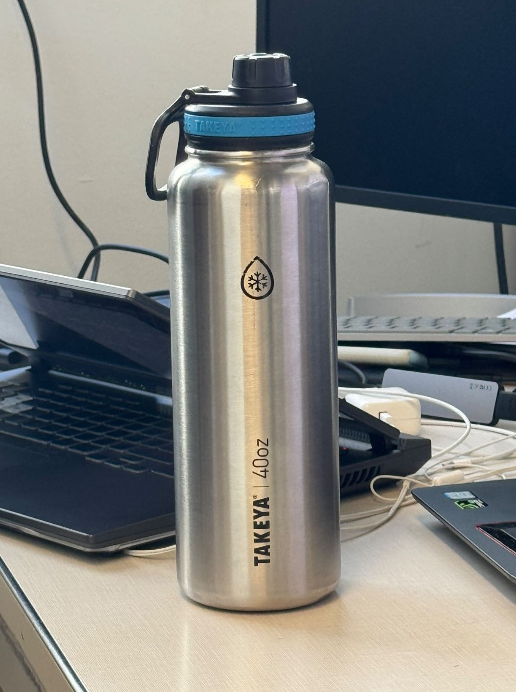
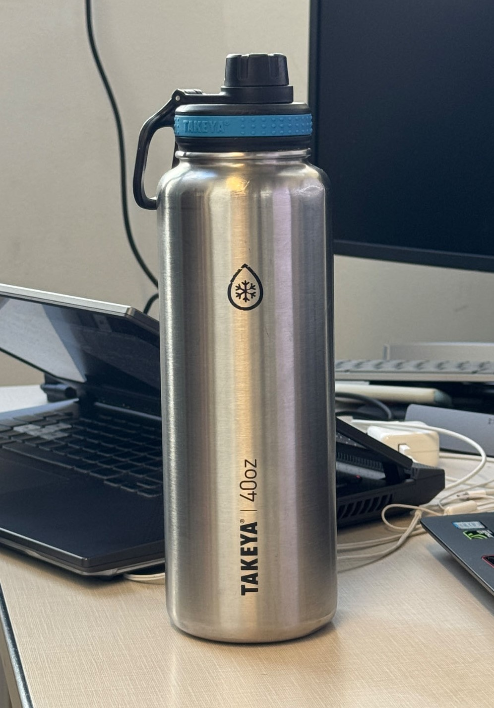

Description
This is the webpage for Project 0: Becoming Friends with Your Camera.
Part 1: Selfie: The Wrong Way vs. The Right Way


What changes across the series?
When taking photos close to the camera (e.g., at 12 mm focal length), most part of the central portion of the face can be thought of as orthogonal to the light rays connecting the camera's optical center and the face's surface. In contrast, the sides of the face appear to be parallel to the rays that ejected from the optical center, thus, large areas on the sides of the face would be projected onto a relatively narrow zone on the image plan, showing server distortion on the images. In addition, since the nose is closer to the camera when compared to the ears, so it projects disproportionately large. This can be explained by similar triangle. For a fixed focal length, in order to occupy the same area on the image plan, the cross-sectional area of the object should grow proportionally as depth to maintain the same height-to-depth ratio. This explains why even though the nose and the ear may have then same physical height, but when projecting onto the image plane, since the nose has a large height-to-depth ratio than the ears (when the camera is close to the face), so the nose appears much larger than ears on the image plane. As the camera moves back, those height-to-depth ratio differences become small for every part of the face, thus the facial proportions appear more natural.
Part 2: Architectural Perspective Compression
{kind=link}

{kind=link}

Why does the perspective look compressed?
Similar to Part 1, the 3D perspective of the object mainly depends on the relative depth of the
different parts of the buildings with respect to the distance to camera. Suppose the front-end
of the building to the camera is, d, and the back-end of the object to the front-end is, l,
and the camera has a focal length of, f. Then, the image scale for the front-end is
f/d,
and the scale for the back-end is
f/(d+l).
So the relative ratio of the two image scale is
d/d+l.
In the 24 mm view, the near side of the building is much closer to the camera than the far side (l is relatively large when compared to d), so f/d > f/(d+l). From farther away, the depth of the building is small relative to the total camera distance (l is relatively small when compared to d), so the near and far sections project at more similar sizes f/d ~ f/(d+l). The far- and the close-end appears almost on the same plane, therefore looks flatter, and the trees and background tower appear pulled toward it. The longer focal length restores the framing, but not the 3D perspective feeling; the greater camera distance creates the compressed perspective.
Part 3: The Dolly Zoom

{kind=link}

{kind=link}

{kind=link}

{kind=link}

{kind=link}

{kind=link}

{kind=link}

{kind=link}

How does the dolly zoom work?
I moved the camera backward while increasing the focal length from 14 mm to 101 mm, adjusting both together so the bottle stayed roughly the same size in every frame. As the camera retreats, the longer focal length narrows the field of view and magnifies the background, while the greater camera distance flattens the apparent depth between background objects. At 14 mm, the frame shows the window and most of the desk around the bottle. By 101 mm, the monitor and laptop fill the background and appear pressed into a flatter plane, even though the bottle barely changes size. As in the first two parts, camera distance drives the perspective change while focal length restores the subject's framing. When putting together, it results in a zooming-in effect of the subject. One should also note that, if we reverese the order, we obtain a fade-away feeling of the subject, even though it remains about the same area on the image plane.